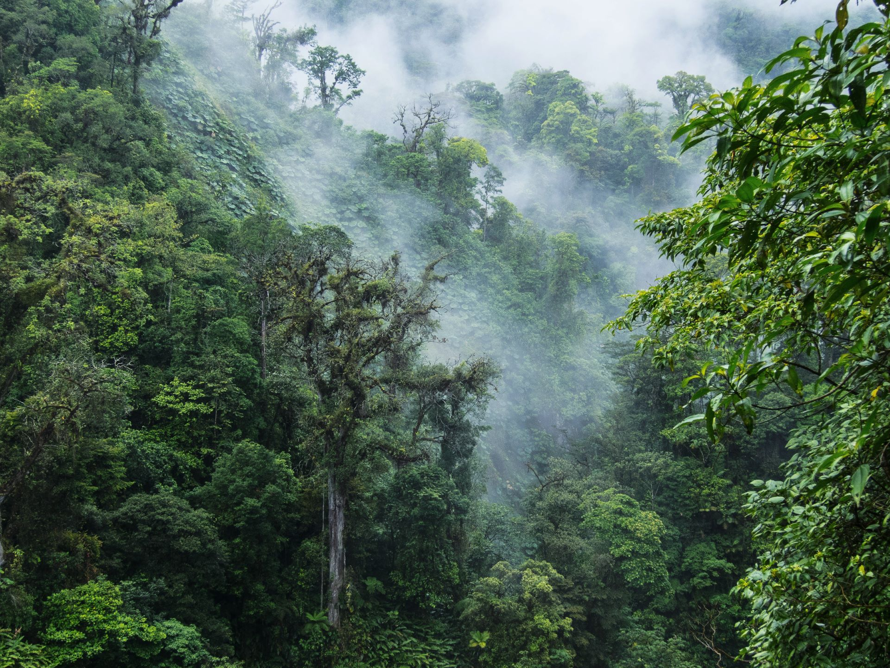

Monteverde
Geographical Location: Central America
Monteverde, Costa Rica is situated 4,662 feet above sea level. Monteverde’s famed cloud forests are the byproduct of fog (a thick, low-hanging cloud) tangling amongst the leaves and branches of the forest canopy. Trails and hanging bridges offer a close-up view of the diverse variety of animals and plants living in the forest.
One of the main tourist locations in Monteverde is the town of Santa Elena, which is not only home to a variety of restaurants with delicious food, but a serpentarium as well. You can enjoy hiking, ziplining, and observing the native wildlife while staying in Monteverde. It’s a truly beautiful place.
Photo Gallery


Los Angeles

Geographical Location: North America
Los Angeles is a sprawling Southern California city and the center of the nation’s film and television industry. Near its iconic Hollywood sign, studios such as Paramount Pictures, Universal and Warner Brothers offer behind-the-scenes tours. On Hollywood Boulevard, TCL Chinese Theatre displays celebrities’ hand- and footprints, the Walk of Fame honors thousands of luminaries and vendors sell maps to stars’ homes.
Los Angeles is famous for its idyllic, warm climate. Temperatures are high but pleasant all year round while rainfall is uncommon and mainly limited to the winter months.
Photo Gallery


Lisbon

Geographical Location: Europe
Lisbon, the capital of Portugal, is a vibrant and historic city nestled along the scenic banks of the Tagus River.
With its picturesque cobblestone streets, colorful tiled facades, and a rich cultural heritage, Lisbon offers a captivating blend of old-world charm and modern dynamism, making it a must-visit destination for travelers from around the world.
Photo Gallery


Bangkok

Geographical Location: Asia
Bangkok, the bustling capital of Thailand, is a city of vibrant contrasts. It blends ancient temples and palaces with modern skyscrapers and a lively street food scene.
Known for its bustling markets, vibrant nightlife, and rich cultural heritage, Bangkok offers visitors an immersive experience in Thai culture, cuisine, and hospitality.
Photo Gallery


Seattle

Geographical Location: North America
Seattle, nestled in the Pacific Northwest of the United States, is a city renowned for its stunning natural beauty and vibrant urban culture.
Surrounded by water, mountains, and lush forests, it offers breathtaking views of the Puget Sound and the iconic Mount Rainier.
Photo Gallery